A tenth translation, and the museum grows to 178 works
Ian Johnston's modern verse Odyssey
Skald's tenth translation is its first modern English rendering: Ian Johnston's verse translation (2002), dedicated to the public domain by its translator in January 2024. It joins the nine historical translations in the same aligned reader — aligned to the Greek using Homeric line numbers, so tappable concepts and museum art carry over to Johnston's wording across all 24 books.
Twenty-seven museum artworks join the collection
27 museum artworks join the collection — 178 pieces in all, from the Met and the Art Institute of Chicago to new arrivals from museums in Prague, Baltimore, and Leipzig. 15 of the new pieces also appear as art plates beside related passages in the text. Every artwork keeps its source and rights details.
Three collections appear in Skald for the first time: the National Gallery Prague, The Walters Art Museum in Baltimore, and Friedrich Preller’s Odyssey fresco cycle from the Römisches Haus in Leipzig. Books 16 and 20 receive their first artifact-linked reading plates — the reunion of father and son, and the thunder omen before the bow.
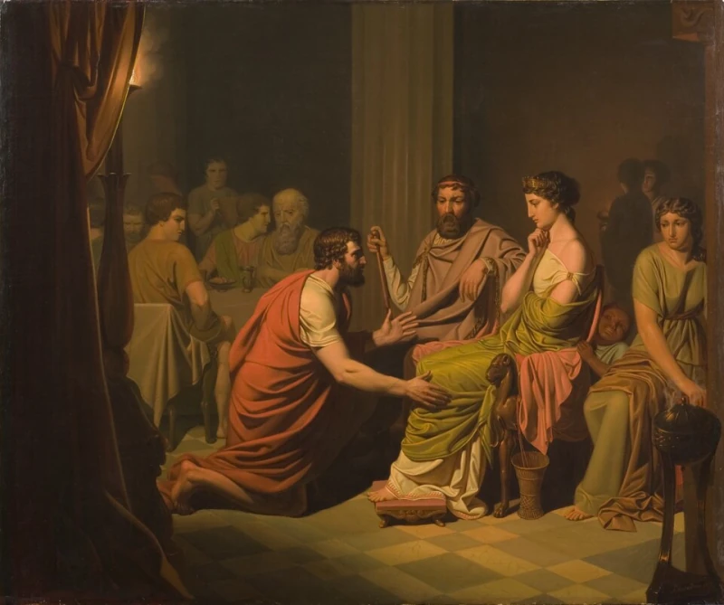
Odysseus before Alcinous, King of the Phaeacians August Malmström · 1853In Skald: Book 7, line 142 — Odysseus supplicates Queen Arete and King Alcinous at the hearth.Nationalmuseum, Stockholm
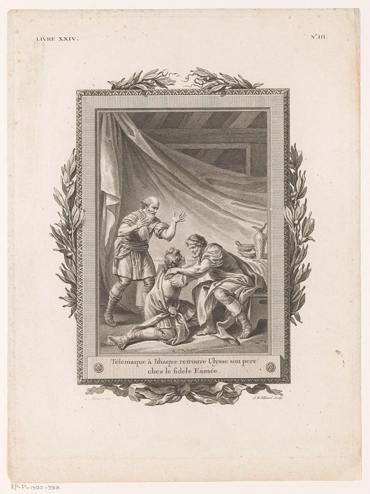
Telemachus and Odysseus Reunited on Ithaca Jean-Baptiste Tilliard, after Charles Monnet · 1785In Skald: Book 16, line 214 — father and son embrace at last in the swineherd’s hut.Rijksmuseum, Amsterdam
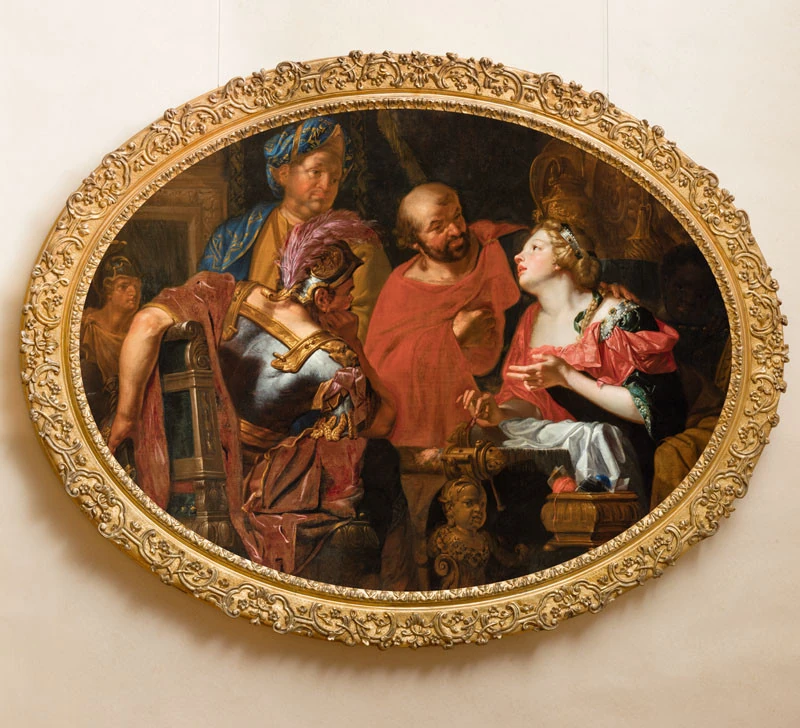
Penelope and Her Suitors Johann Rudolf Byss · 1692In Skald: Book 18, line 275 — Penelope draws gifts from the suitors while holding them off.National Gallery Prague
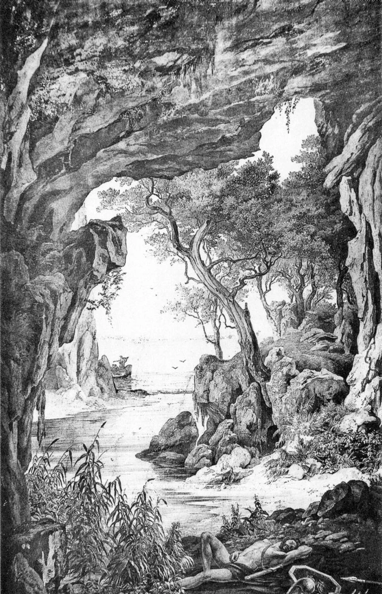
Arrival at Ithaca (Ankunft auf Ithaka) Friedrich Preller the Elder · c. 1832–34In Skald: Book 13, line 117 — Odysseus is set ashore asleep on Ithaca, home at last without knowing it.Römisches Haus, Leipzig
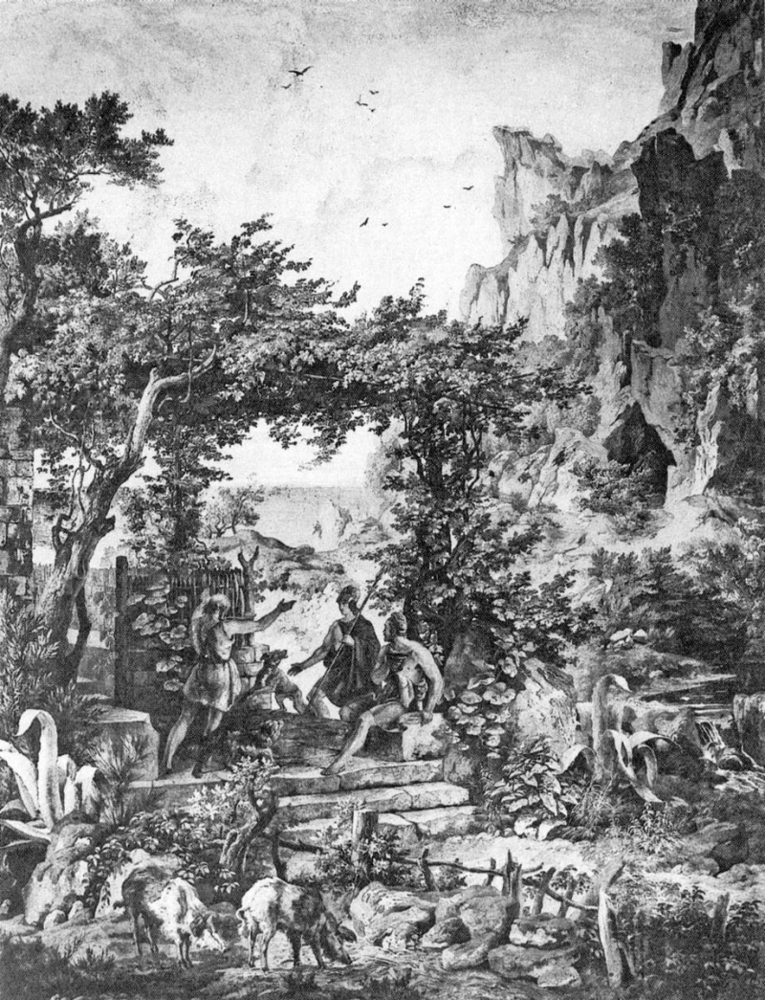
Telemachus Arrives at the Hut of Eumaeus (Bei Eumaios) Friedrich Preller the Elder · c. 1832–34In Skald: Book 16, line 12 — Eumaeus greets the returning Telemachus while the disguised Odysseus looks on.Römisches Haus, Leipzig
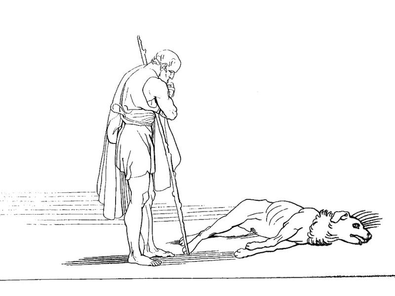
Ulysses and His Dog Argus (from The Odyssey of Homer) After John Flaxman · after a design of 1793In Skald: Book 17, line 302 — old Argus knows his master again after twenty years.The Metropolitan Museum of Art
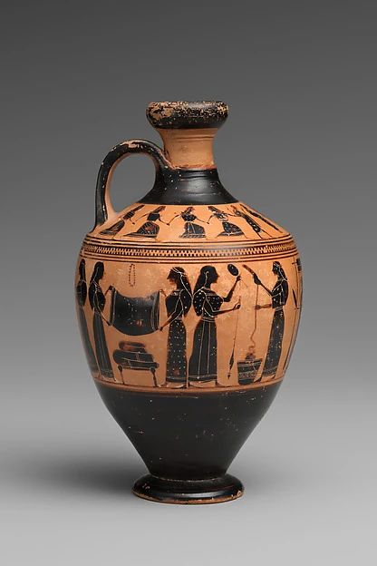
Terracotta lekythos (oil flask) Attributed to the Amasis Painter · ca. 550–530 BCEIn Skald: Book 1, line 357 (also Books 2 & 19) — Telemachus sends Penelope back to her loom and distaff.The Metropolitan Museum of Art
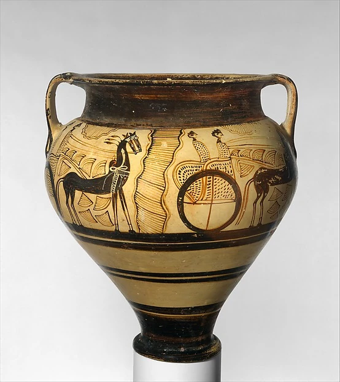
Terracotta chariot krater ca. 1375–1350 BCEIn Skald: Book 3, line 325 — Nestor offers Telemachus the chariot journey to Sparta.The Metropolitan Museum of Art
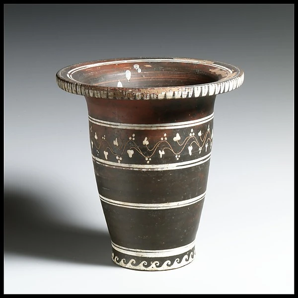
Terracotta kalathos (vase in the shape of a wool basket) ca. 325–300 BCEIn Skald: Book 4, line 131 — Helen’s silver wool-basket on wheels, and her golden distaff, at Sparta.The Metropolitan Museum of Art
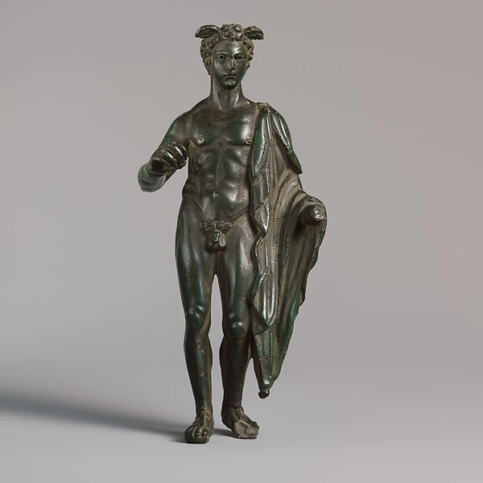
Bronze statuette of Mercury 1st century CEIn Skald: Books 5 & 10 museum panels — Hermes the messenger: Zeus’s envoy to Calypso, and Odysseus’ helper against Circe.The Metropolitan Museum of Art
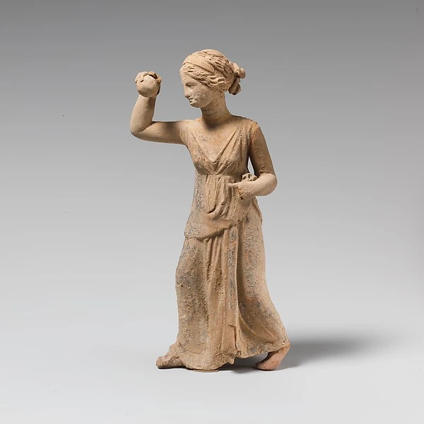
Terracotta statuette of a girl playing ball 3rd century BCEIn Skald: Book 6, line 100 — Nausicaa and her maids play ball by the river after the laundry.The Metropolitan Museum of Art
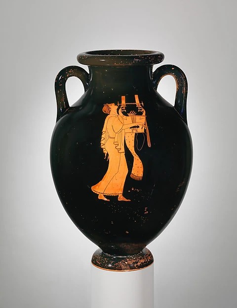
Terracotta amphora (jar) Attributed to the Berlin Painter · ca. 490 BCEIn Skald: Book 8, line 499 — Demodocus sings the wooden horse, and Odysseus weeps.The Metropolitan Museum of Art
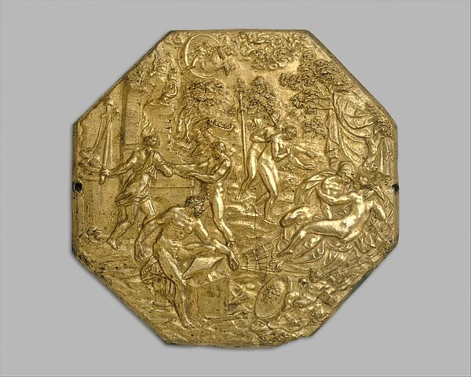
Mars and Venus Trapped by Vulcan After Guglielmo della Porta · late 16th centuryIn Skald: Book 8, line 296 — Hephaestus’ net traps Ares and Aphrodite in Demodocus’ second song.The Metropolitan Museum of Art
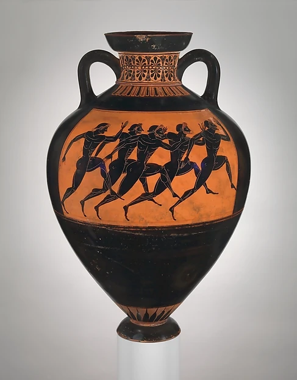
Terracotta Panathenaic prize amphora Attributed to the Euphiletos Painter · ca. 530 BCEIn Skald: Book 8, line 120 — athletes race in the Phaeacian games.The Metropolitan Museum of Art
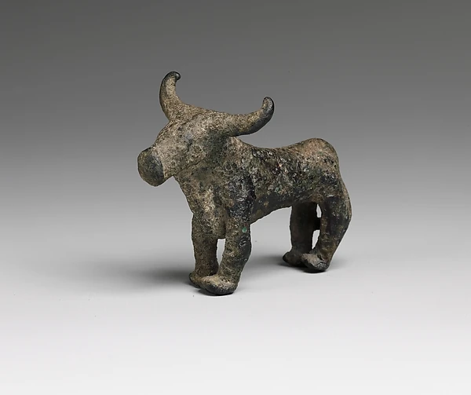
Bronze bull ca. 1400–1200 BCE or laterIn Skald: Book 3 museum panel — Nestor honors Athena with a great sacrifice at Pylos.The Metropolitan Museum of Art
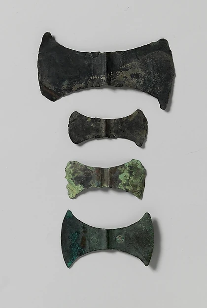
Bronze double-ax head ca. 1700–1450 BCEIn Skald: Book 21, line 120 — the twelve axe-heads stand in a row for the bow contest.The Metropolitan Museum of Art
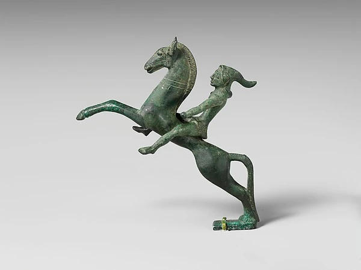
Bronze statuette of a Scythian mounted archer early 5th century BCEIn Skald: Book 21 museum panel — the trial of the great bow no suitor can string.The Metropolitan Museum of Art
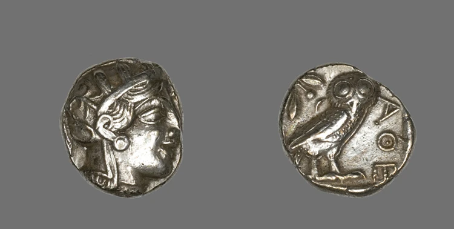
Tetradrachm (Coin) Depicting the Goddess Athena Greek, minted in Athens · about 490 BCEIn Skald: Books 1–4 museum panels — Athena at Telemachus’ side, first as Mentes, then as Mentor.The Art Institute of Chicago
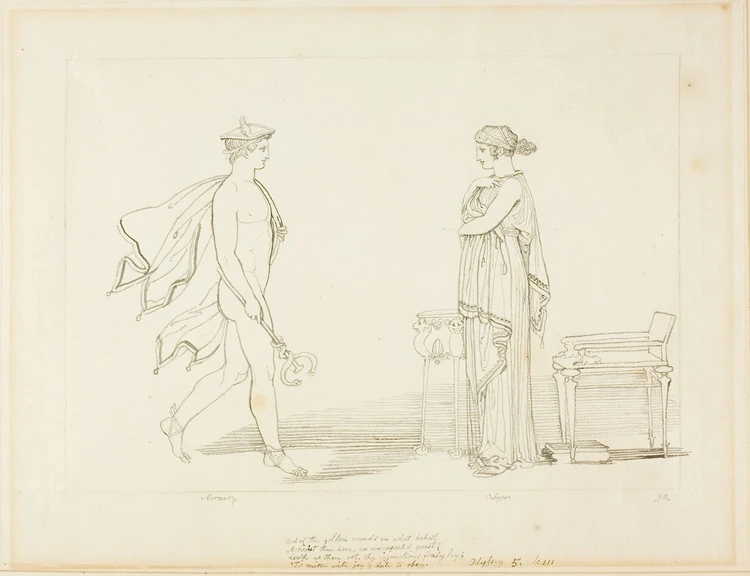
Mercury and Calypso John Flaxman, II, English, 1755-1826 · n.d.In Skald: Book 5 museum panel — Hermes faces Calypso with Zeus’s command to let Odysseus go.The Art Institute of Chicago
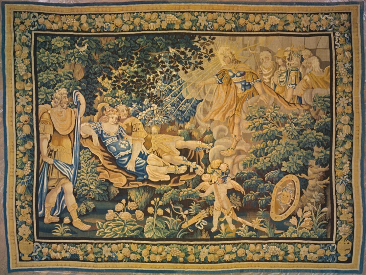
Apollo Exposing Mars and Venus to the Ridicule of the Olympians, from Ovid's Metamorphoses France, possibly Aubusson · c. 1650In Skald: Book 8 museum panel — all Olympus laughs at Ares and Aphrodite caught in Hephaestus’ net.The Art Institute of Chicago
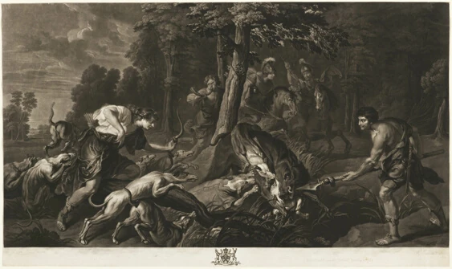
The Calydonian Boar Hunt, from the Houghton Gallery Richard Earlom (British, 1743-1822), after Peter Paul Rubens (Flemish, 1577-1640) · 1781In Skald: Book 19 museum panel — the boar-hunt scar by which the old nurse knows Odysseus.The Art Institute of Chicago
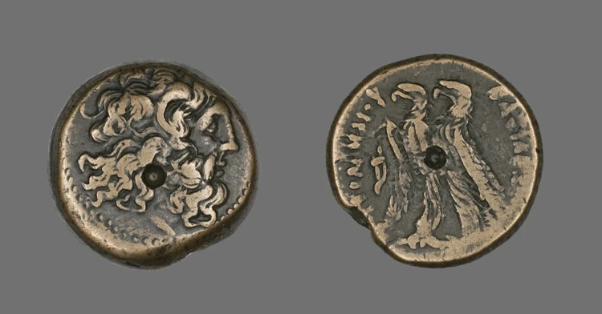
Coin Depicting the God Zeus Greek, Ptolemaic; minted in Egypt · 117–111 BCE, issued by Ptolemy IX (Soter II)In Skald: Books 19 & 20 museum panels — Zeus’s eagle omens: Penelope’s dream of the geese, and the eagle above the suitors’ feast.The Art Institute of Chicago
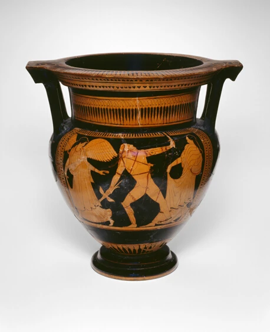
Column-Krater (Mixing Bowl) Attributed to a Member of the Earlier Mannerist Group, Greek; Athens · about 460 BCEIn Skald: Book 20, line 103 (also Books 7 & 8) — Zeus answers Odysseus’ pre-dawn prayer with a thunderclap.The Art Institute of Chicago
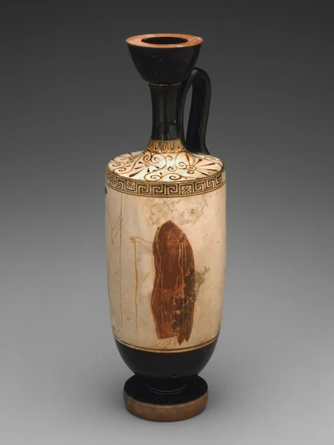
Lekythos (Oil Jar) Attributed to the Achilles Painter, Greek; Athens · 445-440 BCEIn Skald: Books 11 & 24 museum panels — Hermes leads the suitors’ souls down to the meadow of shadows.The Art Institute of Chicago
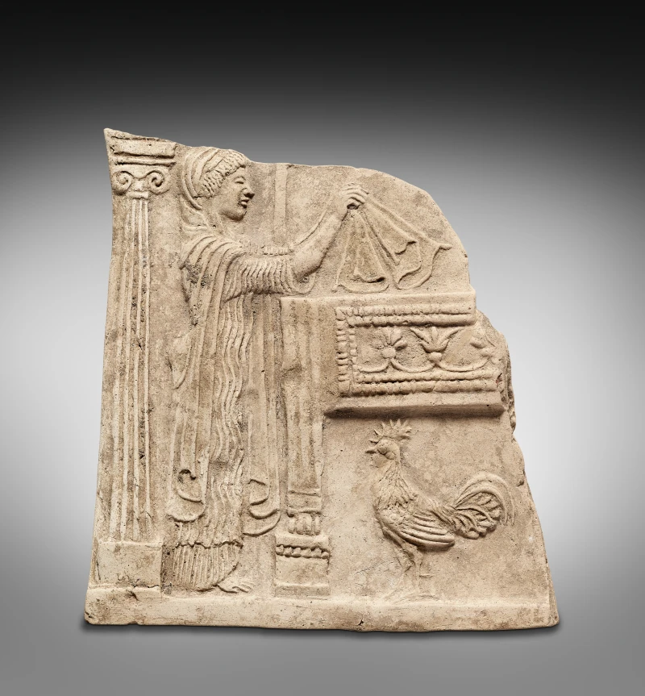
Votive Plaque (Pinax) with Persephone Making her Bridal Bed Greek, South Italian (Locri Epizephyrii) · c. 490–450 BCEIn Skald: Book 11 museum panel — Persephone’s shadowy house, where Odysseus meets the dead.Cleveland Museum of Art
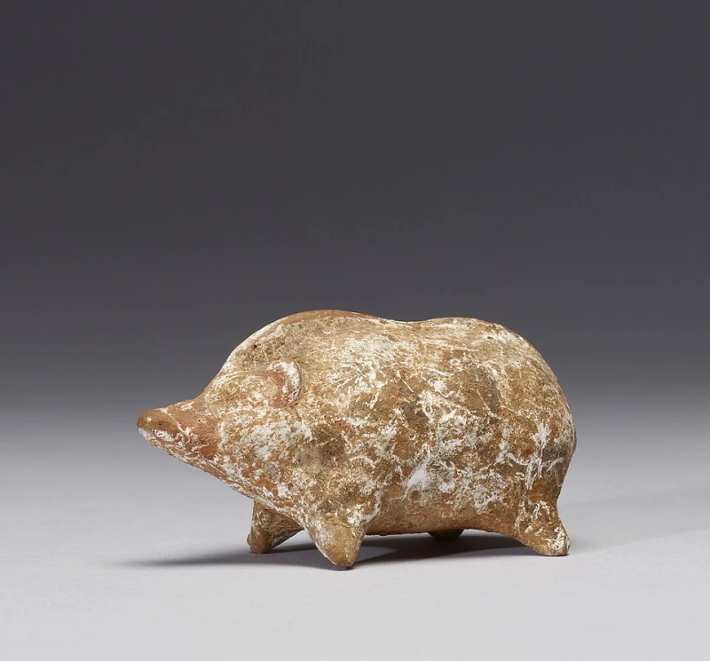
Pig Statuette Boeotian Greek workshop (unknown maker) · 5th century BCEIn Skald: Books 14–16 museum panels — the world of Eumaeus the swineherd, keeper of the household’s pigs.The Walters Art Museum, Baltimore
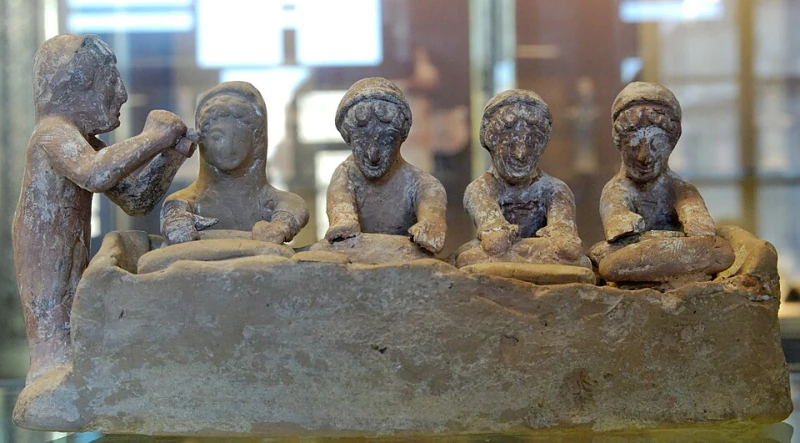
Group of figurines: women kneading dough with a flute-player Boeotian Greek (unknown maker), from Thebes · c. 525–475 BCEIn Skald: Book 20 museum panel — the mill-woman’s pre-dawn prayer for the suitors’ very last meal.Musée du Louvre, Paris · Photo: Marie-Lan Nguyen (Jastrow) / CC BY 2.5
By the numbers
10translationswas 9 at launch
221artworks in allwas 194 at launch
178with museum provenancewas 151 at launch
49museum collectionswas 46 at launch
280inline art plateswas 265 at launch
The new translation is live on the App Store today, and the full update — version 0.4.0 with the complete art expansion — is submitted on both stores and rolling out over the coming days. As always: one-time purchase, everything on your device.
Launch day: Skald: Odyssey is here
Skald: Odyssey is live on Android, iPhone, and iPad in the United States, Canada, Australia, and New Zealand. It is a complete Odyssey reader, built for curious adults and shared reading: all 24 books in source-grounded 1-, 5-, and 20-minute telling depths, the original Greek beside nine historical public-domain translations, and the voyage held together by the Nostos map, the fleet, and a Homeric glossary.
Reading with room to look closer: 194 artworks at launch — 151 museum pieces from 46 collections, plus public-domain paintings and engravings beside the text — paintings, prints, and ancient objects placed beside the passages they belong with, each keeping its source and rights details. Historical works are never blended with generated imagery; reconstructions live in a separate, labeled Sketch mode.
Skald is a one-time purchase with no subscription, no ads, no app account, and no in-app purchases. The reading library lives on your device.